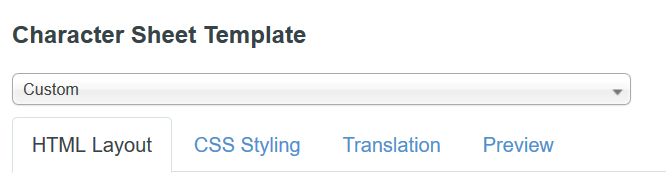
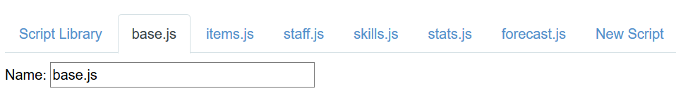
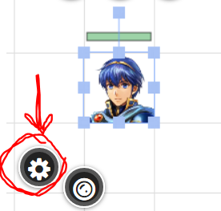
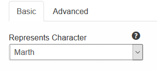
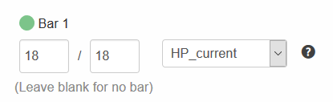

Nightly Setup
*Requires a Roll20 Pro Account
Installation
- If you haven't already, login to Roll20 and click on the Create New Game button.
- Set the character sheet type as Custom, then save the game and go over to the Game Settings tab from the dropdown on the right.
- Copy the entirety of this file into the HTML layout tab, and this into the CSS Styling tab. 
- Now go back to the main settings page and click on the API Scripts option on the dropdown.
- Copy and paste all of these scripts as their own individual scripts in Roll20, and save each of them. 
- And you're done installing! If you use this method, make sure to check the repository frequently to make sure the scripts are up-to-date.

Setup
- Now, actually go into your game by clicking Launch Game from either Game Settings or the Home screen.
- Inside the game, click on the Collection tab () on the right sidebar, and make all of these macros by copy-pasting the text. The script will not work without them otherwise.
- Finally, pull up the turn order by clicking the clock icon on the left sidebar, and click the blue settings icon. Add a custom item named Turn Counter with the formula +1.
- And you're done! Just know that the macros and their linked scripts will not work properly on a token if it's not linked to a character in the Journal.

Attack:
!combat @{selected|token_id} @{target|token_id}
Use-Item
!item @{selected|token_id} ?{Item|@{selected|item_name0}|@{selected|item_name1}|@{selected|item_name2}}
Use-Staff
!staff @{selected|token_id} @{target|token_id}
Use-Skill
!skill @{selected|token_id} @{target|token_id}
Battle-Forecast
!forecast @{selected|token_id} @{target|token_id}
Modify-Stats*
!stats @{selected|token_id} ?{Hit Modifier: @{selected|hitmod} + |0|5|10|15|20|-20|-15|-10|-5}
?{Crit Modifier: @{selected|critmod} + |0|5|10|15|20|-20|-15|-10|-5} ?{Avoid Modifier: @{selected|avomod}
+|0|5|10|15|20|-20|-15|-10|-5} ?{Dodge Modifier: @{selected|ddgmod} + |0|5|10|15|20|-20|-15|-10|-5}
?{Damage Modifier: @{selected|dmgmod} + |0|1|2|3|4|-1|-2|-3|-4}
*I suggest making this one only viewable by the GM, since they'll be doing a lot of background work with this macro.
For convenience' sake, check the box that says "Show as token action" for each macro. Make sure to select the token you're using before taking any actions.

Have fun!
How to link characters in the Journal
- Select the token you want to link the character to, then click on the wheel/settings option when it comes up. 
- Select the character you want to link on the 'Represents Character' dropdown. 
- Optional: Select the dropdown for Bar 1 on the right, type in 'HP', and select the 'HP_current' option. This will sync the current HP of your character with the token's top bar, making it easy to set their HP.
(If you're not doing that, you can set the HP of a character via the Attributes and Abilities tab.)
